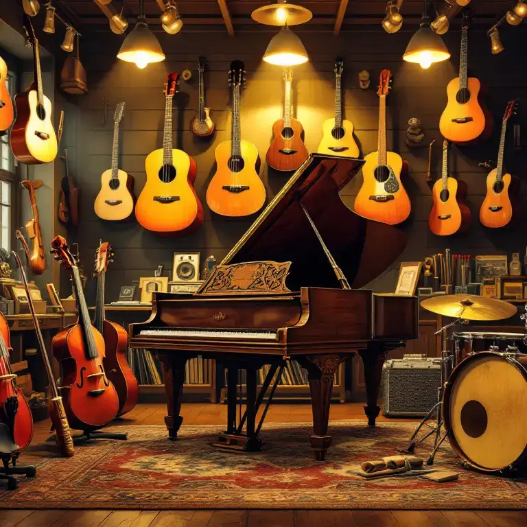

Bienvenido a Naratorg, donde las melodías cobran vida y cada instrumento tiene una historia que contar.
Instrumentos que inspiran
¿Sueñas con crear una sinfonía o simplemente con aprender tus primeros acordes? En Naratorg, tenemos el instrumento perfecto para ti. Deja que tu creatividad vuele con nuestras guitarras, pianos y violines, diseñados para sacar lo mejor de cada músico, principiante o experto. Nuestros instrumentos son objetos de arte que te permiten expresarte con libertad y pasión. Con Naratorg, puedes descubrir el sonido que te hace vibrar.
Elegancia en cada nota
Nuestros instrumentos de alta gama te permiten experimentar la verdadera esencia de la música. Desde pianos de cola que llenan salas con su majestuosidad hasta guitarras que susurran melodías únicas, cada pieza en Naratorg está hecha para quienes buscan la perfección. Con nuestros violines resonantes que capturan la emoción en cada nota y baterías que marcan el ritmo de tu corazón, Naratorg te ofrece una sinfonía de posibilidades. Descubre la armonía en un saxofón, la serenidad en una flauta y la intensidad de un bajo eléctrico. Cada instrumento es una obra maestra esperando ser tocada por manos apasionadas.
Compromiso con la sostenibilidad
En Naratorg, creemos en proteger el planeta mientras creamos arte. Nuestra línea de instrumentos ecoamigables combina materiales sostenibles con un sonido impecable. Porque la música también puede ser responsable.
Instrumentos para toda la familia
¿Buscas una flauta para el pequeño de casa o un tambor para las clases de música del colegio? Contamos con opciones para todas las edades, asegurándonos de que cada miembro de la familia encuentre su voz musical.
Compra rápida y sin complicaciones
En Naratorg sabemos que tu tiempo es valioso. Nuestro proceso de compra está diseñado para ser sencillo y rápido. Encuentra, elige y adquiere tu instrumento en pocos clics. Así de fácil. Además, ofrecemos una experiencia de compra personalizada para asegurarnos de que encuentres exactamente lo que buscas. Nuestro equipo está siempre disponible para ayudarte en cada paso del camino, desde la selección hasta la entrega. Descubre la facilidad de comprar con confianza en Naratorg.
Calidad en cada detalle
Cada instrumento en Naratorg está cuidadosamente seleccionado para ofrecerte calidad y durabilidad. Ya sea que busques un violín para conciertos, un teclado para principiantes, o una guitarra que inspire tus composiciones, tenemos lo que necesitas. Nuestro compromiso es ayudarte a encontrar el instrumento perfecto que acompañe cada acorde de tu viaje musical. Explora nuestra colección y descubre por qué Naratorg es el lugar ideal para músicos apasionados que valoran la excelencia.
Conocemos que cada artista tiene un sonido único y que cada instrumento es una extensión de tu creatividad. Por eso, en Naratorg nos enfocamos en brindarte una experiencia de compra personalizada, para asegurarnos de que encuentres el instrumento que mejor se adapte a tus necesidades y estilo de música. Nuestro equipo de expertos en instrumentos musicales está listo para ayudarte en cada paso del camino.

Seguimiento al instante
Sigue el recorrido de tu pedido desde el momento en que sale de nuestras manos hasta que llega a las tuyas. Nuestra herramienta de rastreo te permite saber dónde está tu instrumento en todo momento. De esta manera, puedes estar seguro de que tu instrumento llegará a ti rápidamente, sin sorpresas ni retrasos. Además, te ofrecemos la posibilidad de recibir notificaciones en tiempo real sobre el estado de tu envío, para que puedas hacer un seguimiento detallado y planificar la recepción sin inconvenientes. Con Naratorg, la transparencia y la confianza son parte de cada paso del proceso de entrega. Nuestro equipo de logística se encarga de asegurarse de que tu instrumento sea entregado en la fecha y hora establecidas, para que puedas disfrutar de tu nuevo instrumento lo antes posible.
Así que, ¿qué esperas? ¡Comienza tu viaje musical con Naratorg! Regístrate, elige tu instrumento y prepárate para disfrutar de la mejor experiencia de compra de instrumentos musicales en línea. ¡Nuestro equipo te agradece la confianza!
Instrumentos que nunca fallan
Nuestros clientes valoran la confianza que ofrecemos. Cada pieza de nuestra colección es probada para asegurar que cumple con altos estándares de calidad. Porque la música merece lo mejor. Ya sea que estés buscando un instrumento para comenzar tu viaje musical o para perfeccionar tus habilidades, Naratorg es el lugar donde la pasión y la calidad se unen. Descubre una experiencia de compra única que te acompañará en cada nota que toques.
Novedades que te encantarán
Mantente al tanto de nuestras ofertas exclusivas y los últimos lanzamientos. Desde nuevas tecnologías en teclados hasta ediciones limitadas de guitarras, siempre hay algo emocionante en Naratorg.
Espacios llenos de inspiración
Nuestros locales están diseñados para que te sientas como en casa. Prueba instrumentos, explora catálogos y deja que la música te guíe en un entorno acogedor y creativo.
Recordatorios que te alegrarán
Te mantendremos informado sobre tus pedidos y te daremos consejos para el cuidado de tus instrumentos. Porque en Naratorg, nos importa tu experiencia musical.
El camino hacia la excelencia
Tu aventura musical comienza con Naratorg. Desde el momento en que eliges tu instrumento hasta que das tus primeros pasos en la música, estamos aquí para apoyarte en cada nota.
Compromiso con tu pasión
En Naratorg, no solo vendemos instrumentos; compartimos tu amor por la música. Nuestra misión es conectarte con la herramienta perfecta para que puedas expresarte sin límites.
Servicios hechos para ti
Sabemos que cada músico tiene necesidades únicas. Por eso, adaptamos nuestra oferta para brindarte una experiencia personalizada. Desde asesoría hasta mantenimiento, en Naratorg pensamos en ti.